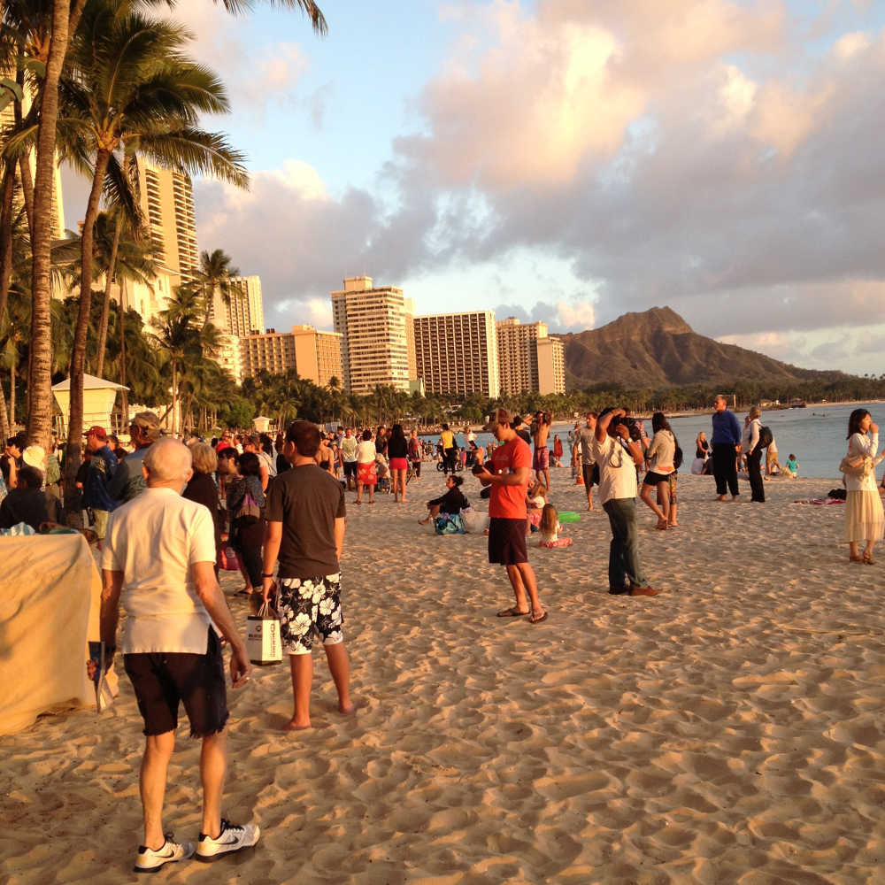

Ethiopian Food and Bar 35
An Evening in Chinatown

Chinatown is the artsy, cool, and shady part of town. You'll find some of the funkiest restaurants in the state next to karaoke dives where you ask the bartender for toilet paper before using the restroom.
(read more)
We've been to Chinatown many times before. If you're driving, you might get lucky and find street parking, which is free after 6:00. Mark's Garage is always an option at $8 for the night. Chinatown Municipal Parking is a cheap and convient option too. Note that the strategy is to park somewhere and walk. If you're not driving, a cab ride from Ala Moana Center to Chinatown runs about $10.
On this trip to Chinatown, we decided to try the Ethiopian Love Restaurant. We made reservations for 5:00. This probably wasn't necessary since it was empty when we arrived. When we left around 7:00, however, it was packed and there was a wait.
Inside the ambiance was warm and inviting. Outdoor seating was unavailable during our visit because actor Zac Efron and crew were preparing to film a movie in the courtyard. There was last minute shuffling of tables and chairs by the staff. Despite this, they were helpful and easygoing thought a bit winded.

The menu at The Ethiopian Love Restaurant includes beef, lamb, and chicken dishes. Nevertheless, the restaurant is a great option for vegans and vegetarians. For an appetizer, we ordered Lentil Sambusa.

For the main course, the waiter recommend the Ethiopian Love Veggie Sampler for Two. We added the Timatam Salad. There are no utensils. You eat by tearing off pieces of injera bread and scooping lentils, peas, cabbage, kale, potatoes, or other spiced items. Everything we tried was delicious. The restaurant is BYOB with a $3 corkage fee per person so you'll need to bring your own beer or wine. Plan ahead or stop at a nearby corner store. Our bill was $55 before tip.

After dinner we walked to Bar 35. They have a huge beer selection. If you're hungry, they offer unique twists on typical bar foods such as pizza and fries. We watched The Symths, a The Smiths cover band, do a sound check. On any given night, you can expect to see a band, DJ, or a least a movie playing on the wall. We've heard of match.com meet-up evens happening here too. If there's room, check out the courtyard in back. A couple of beers each cost us $25 before tip.
Kapiolani Beach and Lulu's
A Perfect Waikiki Sunset

Located across the street on the corner of Kalakaua and Kapahulu, Lulu's is just upstairs from Starbucks. It is a casual restaurant with a good selection of craft beer and great pub food. You'll see bikers, tourists, and everything in between here. A big draw is the spectacular sunsets.

Grab a book or magazine and head to Queen Kapiolani beach. Out on the pier, you'll see drone pilots and kids doing cannon balls. If you're lucky, you'll get to dance with the Hare Krishnas. It's a fun place to sit and people-watch.

You can't go wrong with the nachos (tip: the full order is HUGE even for two people). If you're feeling the urge to go all out on dinner, the Magnum P.I. Burger is hunk (of beef). For something lighter, you can't go wrong with their Caesar Salad (the croutons are pretty good).
music and comedy
The Republik
This small venue is a great place to see up and coming comics or bands. Must more intimate than the Blaizedale. Reasonable drink prices with good food. Mints provided in the bathroom.
Meet the performers after for a picture and conservation.
sand and watercolor sky
Waikiki Beach
Take a strool along the sidewalk made of sand and smell the ocean. See people happy to be near the water.

Take a strool along the sidewalk made of sand and smell the ocean. See people happy to be near the water.
what's that island
Rabbit Island

Urband legends galore. Either this island is full of rabbits or it looks like a rabbit. I've lived here fifteen youre and do not know and perptetuate total crap. But, the facts do not mattert. It's not about the facts. God fucking fuck, this keyboard I keep hitting the mouse pad. There is no place to rest my thumbs.
it's rainng, it's pouring
See a Movie!
If the weather is crappy head to the Dole Cannery and see a movie. This is a picture from the parking lot. The theaters at Dole Cannery are much better than Ward Consolidated. Less crowded and comfortable seating.

It almost looks like a cold winter in Detroit. But no, it's a sunset near Honolulu Harbor.
one-thousand steps
Koko Head Hike
Over a thousand steps to the top. It's steep, there's a bridge, and watch out for bees. Good luck. Well worth it though for the views of eastern and southern Oahu.

Over a thousand steps to the top. It's steep, there's a bridge, and watch out for bees. Good luck. Well worth it though for the views of eastern and southern Oahu.
more info
Contact and Social
Unlike anytime, anyday hasn't made its way into the dictionaries. Argument could be made that if anytime is an adverb, then so is anyday. Like all informal slang, it's up to personal preference. All picture were taken with cellphone cameras.
If you have any questions or comments, email: anydayhawaii@gmail.com. Also, check us out on instagram: http://instagram/anydayhawaii.com


Thanks Much!
EF and MC